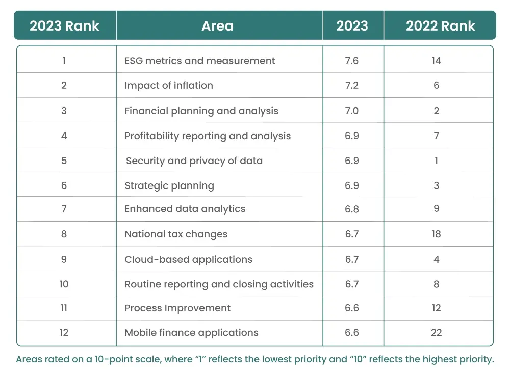

The growing awareness of environmental issues, such as climate change, pollution, and resource depletion, has led Investors to become more conscious of the long-term risks associated with companies that do not prioritize sustainability reporting. Countries have also made ESG performance disclosures mandatory for companies by implementing ESG strategy.
ESG functions as a valuation technique that takes into account environmental, social, and governance issues. ESG framework helps identify, organise, analyse, prioritize, and accordingly guide decisions on various business risks. These risks, if left unaddressed can prove costly to the functioning and sustenance of businesses. ESG risk management enables long-term, sustainable growth by evaluating potential issues, and provides time to adapt and develop mitigating strategies.
These factors led the company’s leadership to rethink the implementation of proper ESG practices, including ESG software implementation, in their decision-making to increase the ESG performance of their companies for their company sustainability.
Global Finance Trends Survey showed that ESG metrics and measurement topped the list of overall finance priorities for the CFOs, finance leaders and finance teams. In 2022, ESG metrics and measurement were ranked 14 in the list of priorities.
Top 10 priorities for CFOs and finance leaders for the next 12 month

The table has been sourced from Global Finance Trends Survey
A major reason for this up rank is due to the introduction of the European Union’s (EU) game-changing Corporate Sustainability Reporting Directive (CSRD), which standardized, reporting on ESG performance and made the disclosures verifiable.
CSRD compliance and other global ESG 2.0 requirements fall within the finance leader’s pilothouse of expertise. One purpose of CSRD is to elevate sustainability reporting to the level of rigor associated with financial reporting from a reliability, accuracy, accountability and auditability perspective.
The finance leaders have increasingly stepped up their game in adopting sustainable practices, for mainly 5 reasons:
- Optimizing costs: Sustainable practices across the supply chain can bring down the cost of running a business. The finance leaders are exploring the opportunities along with the operations team, to challenge long-held views and outdated systems to highlight the cost savings that can be achieved through sustainable practices.
- Minimise ESG risks: The correlation becoming clear between financial growth and strong ESG performance, shows that ESG risks are increasingly linked to financial risks. Finance leaders can identify, mitigate or eliminate the risks by implementing sustainable practices. Companies with vigour ESG-linked practices are more elastic and well-positioned for long-term success.
- Brand reputation: There is an increase in the demand for accountability by companies. Customers favouring the products and services of businesses with good ESG implementation strategy, the employees want to work for companies with strong consciences for environmental and social factors.
- Capital acquisition: The shift towards sustainable practices presents a unique opportunity to redefine the role, turning environmental consciousness into a strategic advantage for the finance leaders. A new pool of capital can be accessed by the finance leaders by implementing better ESG practices. Investors and financiers are increasingly investing in companies that demonstrate a commitment to sustainable practices. By aligning investment and customer retention strategies with specific ESG metrics, finance leaders can create a compelling narrative for potential investors.
- Long-term impact: A long-term approach acts as a catalyst in risk management by including tangible and intangible factors. This approach also introduces new opportunities and challenges which a company might face in the long run and keeps the finance leaders aware of potential threats and rewards.
The finance leaders can ensure commitment at all fronts, set proper ESG goals, access the present state of the operations, set KPIs and report on the progress towards sustainability, for better ESG performance of the companies they lead. These strategies will ensure a steady progress towards the sustenance of the businesses on all fronts, be it environmental, social, or governance.
Evolving Role of Finance Leaders: Driving ESG Performance and Accountability
As financiers, investors, regulators, and other stakeholders increase their demand for accountability, ESG disclosures, and increase in overall ESG performance of the companies, it is time for the finance leaders to put on the shoes of different roles. The finance leaders must act as motivators, tacticians, drivers, and stewards for implementing best ESG practices across the company to lead the company to increase its ESG performance and take a balanced approach to stay aligned with the asks of the different stakeholders together with increasing the company’s value.
Innovative Solutions for ESG Implementation and Beyond with ecoPRISM
In this dynamic landscape of evolving ESG practices, navigating the complexities and demands of sustainable finance requires expertise and strategic guidance. At ecoPRISM, we specialize in providing comprehensive solutions tailored to empower organizations in driving ESG implementation forward. From establishing robust ESG strategies to leveraging innovative ESG software solutions, we equip businesses with the tools and insights needed to enhance their ESG performance effectively.
Contact us today at info@ecoprism.com to discover how ecoPRISM can support your journey towards sustainable finance excellence and maximize the value of your ESG initiatives.
Request a callback here to embark on your ESG implementation journey with ecoPRISM.